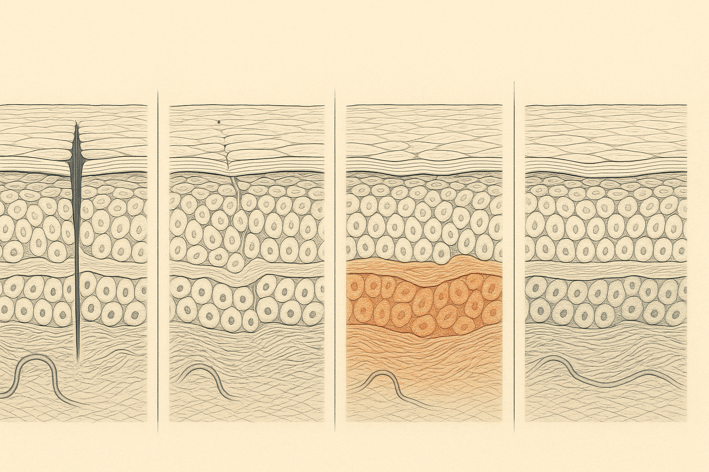
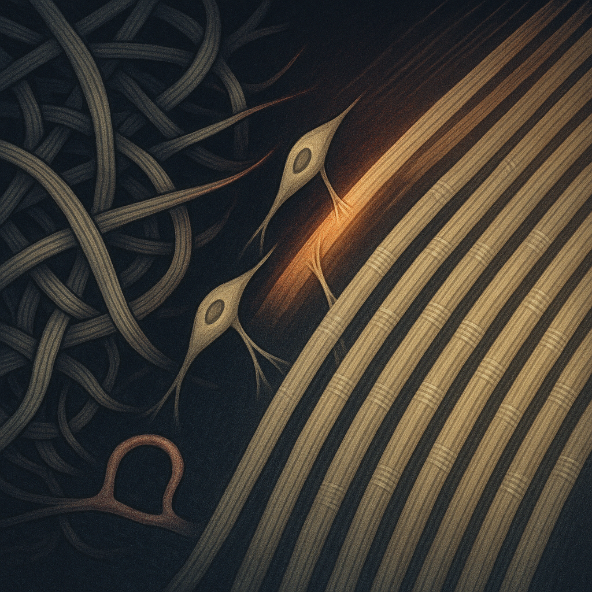
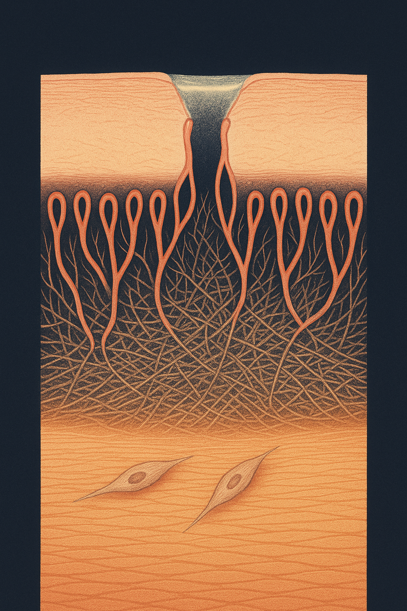

Review below. Reply approve to publish the Facebook post, or tell me edits.

Days to close. Months to rebuild.
The skin you can see closes over in a matter of days. The tissue underneath keeps being rebuilt and rearranged for months, often up to a year. That gap is why a healed spot still leaves a flat pink or brown shadow long after the wound itself is gone.
Most of us judge healing by the surface, because the surface is the only part we can check in the mirror. Underneath, repair is running on a much slower schedule, and knowing that schedule changes what you expect at week three, week six and month four.
The moment skin is broken, whether by a picked spot, a scratch or a shaving nick, the first job is plumbing. Blood vessels constrict, platelets clump, and a fibrin clot forms. The proper name for that stage is haemostasis, which simply means stopping the bleed. The clot is not just a plug. It dries into a temporary scaffold, a rough bit of mesh that later cells crawl along.
Within hours, immune cells arrive. Neutrophils first, then macrophages, clearing out bacteria and damaged tissue and releasing signals that call in the repair crew. This is the inflammatory phase, and it is the reason a small wound looks angrier on day two than it did on day one.
Worth sitting with: the redness, the warmth, the slight swelling are the clean-up, not the damage. Inflammation gets a bad name in skincare copy, but a wound that does not mount one heals badly. The problem is never that inflammation happens. It is when it refuses to switch off. Reinke and Sorg's overview of wound repair describes these phases as overlapping rather than tidy, which matches what skin actually does.
From roughly day three onward, the proliferative phase takes over, and it runs for a few weeks. Three things happen at once.
New capillaries sprout into the wound bed, because rebuilding is expensive and needs oxygen. Keratinocytes, the main cells of the outer layer, migrate in from the edges and from surviving hair follicles, sheeting across the gap until they meet in the middle. And fibroblasts, the collagen-making cells of the dermis, move in and start laying fibre down fast.
Fast is the operative word. The collagen produced here is mostly type III, a thinner, more flexible form, and it is deposited in a disorganised tangle rather than the ordered mat of undamaged dermis.
Think of emergency scaffolding thrown up overnight around a damaged building. Straight enough, strong enough, up in a hurry. Nobody would mistake it for the finished facade. That is what sits under a wound at three weeks, and it is why a recently closed mark can feel slightly firm, look slightly raised, and read pink under the light. The pink is largely all those new vessels, still running at emergency capacity.
Then the slow phase begins, and this is the one almost nobody accounts for. It is also the reason every honest answer to "how long until I see something" is measured in months.
Remodelling starts around week three and continues for months. It is commonly described as running up to about a year, and in some tissue longer. During it, the hasty type III collagen is progressively broken down and replaced with type I, the stronger, thicker form that makes up most of normal dermis. Enzymes trim and re-cut fibres. The fibres themselves reorient, aligning along the lines of mechanical tension in that part of the body rather than lying at random. The surplus capillaries regress, because the emergency is over and the tissue no longer needs that much blood.
Xue and Jackson's review of extracellular matrix reorganisation sets out this collagen turnover in detail, including how the balance between building and breaking down determines whether a repair settles flat or thickens.
What you observe from the outside is undramatic and gradual. The mark flattens. The pink drains away as the vessels retreat. The texture softens and starts to move like the skin around it. None of that is visible week to week. All of it is visible between a photo taken in March and one taken in July.
A few practical consequences follow from the biology.
Disturbing a healing site does not simply delay things by a day. It triggers a fresh inflammatory round on the same patch of skin, which means the whole proliferative and remodelling sequence begins again from that point. Repeated interference on one spot is how a short repair becomes a long one.
Melanocytes in freshly repaired skin are unusually reactive, so UV exposure during the healing window is a major reason a temporary pink mark ends up as a persistent brown one. Daily protection over a healing site is the cheapest intervention available.
If remodelling is a months-long process, then assessing a mark at three weeks is assessing scaffolding. The honest read is much later. This is the single most useful reframe: most people conclude something has not worked at exactly the point the slow phase is just getting started. At three months the pink has usually drained. At six, texture is the thing that has moved. At twelve, you are looking at the finished job.
A note on evidence quality, since this is a field with a lot of confident marketing.
Wound repair is the best-evidenced end of light-and-skin research. Avci and colleagues' review of low-level light therapy in skin describes healing and repair as the area with the deepest laboratory and clinical literature behind it, while cosmetic effects on fine lines and tone are more modest, slower and less consistently measured. That reviewed evidence comes from clinical and laboratory light therapy, not from any particular consumer product, so none of it says anything about what a given home device will do. Anything of that kind sold for home skincare is a cosmetic device, not medicine. Gurtner and colleagues' Nature review makes the broader point that repair mechanisms themselves are well mapped, even where interventions to accelerate them are not.
Do LED face masks do anything? The underlying mechanism, light absorbed by cells influencing their activity, is real and has been studied for decades. What is much less settled is how much a low-powered home device changes a face compared with a clinic light. Treat them as gradual support, not a treatment.
How long before I see a change? If anything shifts, it shifts on the biology's schedule, which is months. Compare photos three to six months apart, not week to week.
Is more time better? No. These are consistency devices. A short session most days beats a long session occasionally, and there is no evidence that doubling the time doubles anything.
Will it fix a scar or a pigment mark? No home light device should be sold to you as fixing anything. Sun protection over a healing mark does far more for the eventual colour than any gadget.
Repair is measured against itself. Not against someone else's skin, not against a week-old expectation, and not against the version of your face you remember. The only comparison that carries information is your own skin at a distance of time: same spot, same light, months apart.
Consistency matters more than intensity precisely because the underlying process is slow, structural and largely invisible. Support it, protect it, and stop poking it.
Save this one for month three, and read it again when you are convinced nothing is happening. That is usually the exact week the slow phase gets going.
What is the longest you have given something on your skin before deciding it was not working?
We make a ten-minute at-home red light therapy face and neck mask, the full spec is there.

A spot heals in a week. The skin underneath rebuilds for a year.
Picking restarts the whole sequence, on the same patch, from the top.
Days: the surface closes over. That is the fast phase, and it is the only part you can check in the mirror.
Weeks: collagen goes down fast and untidy, and extra blood vessels are built to feed the work. That is the pink, slightly raised stage.
Months: the rushed fibres get swapped for finer, better-aligned ones. The surplus vessels quietly recede. The mark flattens.
So the flat pink or brown shadow at week three is not a scar, and it is not a failure. It is a building site still being tidied.
Judging a mark at three weeks tells you almost nothing. Three months tells you a great deal.
Patience gets talked about like a personality trait. With skin it is closer to a method: you are not waiting around, you are giving a process the time it actually runs on. It is also why anything you do for your skin, light therapy included, gets judged on months rather than weeks.
General skin education only. A light therapy device is a cosmetic device, not medicine.
Be honest: are you a picker, or a leave-it-alone type?
#skinscience #skinbarrier #collagen #skincaretips #skinlongevity
CTA: (first comment) If you ever want a closer look, our ten-minute red light face and neck mask is here: https://redermis.com.au/products/red-light-therapy-face-neck-mask

Week three tells you nothing. Month three tells you everything.
Your skin closes a wound in days, then spends close to a year rewriting it underneath.
And one practical thing first: picking restarts the clock on the same patch, every time.
Days: the gap closes. A provisional matrix bridges the breach, more scaffold than skin.
Weeks: new vessels crowd in and collagen goes down fast and untidy. A rush job, but it holds.
Months: those rushed fibres get swapped for finer, aligned ones. The extra vessels recede. The mark flattens and settles.
So the shadow you can still see at week three is remodelling in progress. Not a scar. Not a failure.
Save this and check back at month three, not week three. Then tag the friend who photographs her face every second day.
General skin education only. A light therapy device is a cosmetic device, not medicine.
We make a ten-minute daily red light face and neck mask. Link in bio if you want a closer look.
#skinscience #skinrepair #collagen #skinbarrier #redlighttherapy #skincareaustralia
## Title
Why a healing mark still shows at week six: the year-long timeline of skin repair
## Description
Weeks one to three lay down fast, disorganised collagen. That is the pink, raised stage. A scratch closes in days. The skin beneath rebuilds for close to a year. From month three those fibres are remodelled into aligned tissue and the extra vessels recede, so a lingering mark is the slow phase, not a failure. The strong evidence here is general wound biology: light therapy's cosmetic effects are more modest and slower. A light therapy device is cosmetic, not medicine. Patience is a real step.
## CTA
If you want a closer look at red light therapy at home, the mask and full spec are here: https://redermis.com.au/products/red-light-therapy-face-neck-mask
## Destination URL
https://redermis.com.au/products/red-light-therapy-face-neck-mask
## Hashtags
#SkinScience #RedLightTherapy #LEDFaceMask #SkincareEducation #SkinHealth
Note: this pin reuses the Instagram image.